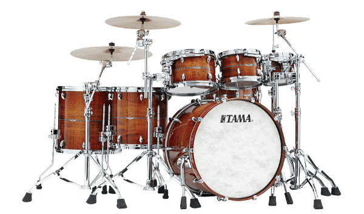

La Historia de Bateros
Somos una empresa que desde hace años tiene como objetivo proveer exactamente lo que el músico profesional necesita, combinando el trabajo artesanal con las últimas tendencias del mercado musical. Representamos la mayor innovación de diseño en la construcción de baterías Argentinas.
Terminaciones de Calidad y Diseños Personalizados
Revestimientos: el cilindro de madera se recubre con láminas de diferentes colores a elección. Laqueados: opcional en brillantes u opacos, este proceso es realizado conservando la más pura tradición.
Aros Vintage, Aros de Maderas y Tirabordona
Diseños a tu elección en todos los modelos. Colores primarios o diseños combinados están disponibles para el baterista que gusta de un look personal de su instrumento. Consultar por la gama completa de colores.
La bateria de tus sueños!
Tu instrumento personalizado 100%. Contactanos y te enviaremos un presupuesto a la brevedad